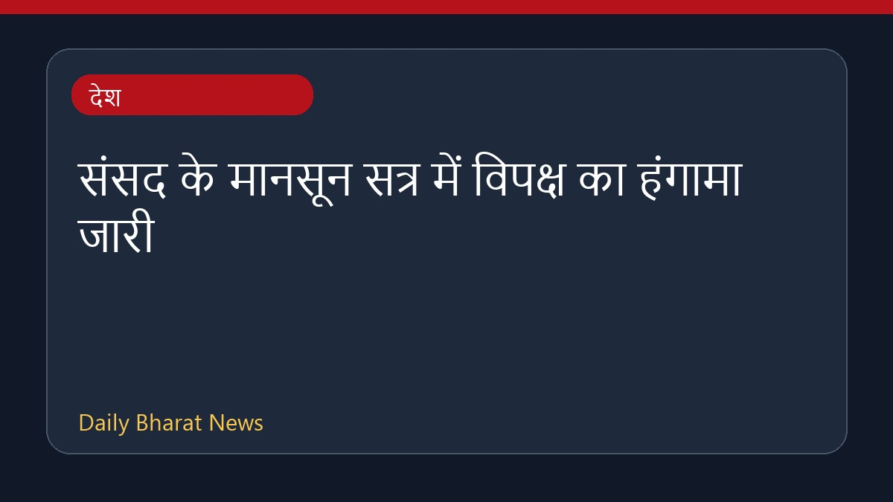

संसद के मानसून सत्र में विपक्ष का हंगामा जारी

संसद के मानसून सत्र के तेरहवें दिन भी विपक्ष का विरोध प्रदर्शन और गतिरोध जारी रहा। विपक्षी दल अमित शाह से जवाब मांगने और अन्य मुद्दों पर अड़े रहे। इस बीच, विरोध प्रदर्शनों के बावजूद संसद ने कुछ विधेयक पारित किए। कांग्रेस अध्यक्ष मल्लिकार्जुन खड़गे और राहुल गांधी के नेतृत्व में कांग्रेस नेताओं ने प्रधानमंत्री आवास के पास प्रदर्शन किया तथा प्रधानमंत्री और गृह मंत्री के इस्तीफे की मांग की। लोकसभा की कार्यवाही को भी विपक्षी हंगामे के कारण दोपहर दो बजे तक के लिए स्थगित करना पड़ा। स्थिति को देखते हुए पूरे सत्र के washout होने की संभावना जताई जा रही है।